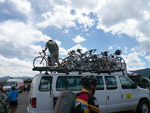
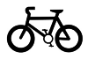

On the Tour
Self-Supported, Camping. With this style of touring you bring everything you need and camp out along the way. It's the most challenging because you have to bring more stuff (tent, sleeping bag, food preparation items, etc.) -- but in my mind it's also the most rewarding.
Self-Supported, Motels. If you can afford it, you can stay in motels along the way. That dramatically cuts down on the amount of stuff you have to haul with you. Note that even if you camp only 10% of the time you'll still have to haul everything you need for camping 100% of the time. (Of course you could get creative/extravagant and mail your camping gear from one motel to one you'll be hitting a few days down the road, so you can camp in the future without having to haul all the camping gear).
Sag Supported. With this style you have a support vehicle (usually a van) going along for the trip. The van hauls all the heavy stuff and you meet up with it at the end of the day.
Additional tips to follow during The Big Bike Tour .
- Don't loaf around your first days. Light exercise stimulates breathing and circulation and speeds adjustment.
- Even if you are having trouble sleeping, try to get plenty of rest.
- If you'll be sleeping in a hotel, use a humidifier. Bring one with you or rent one while you are here.
- Eat smaller meals at altitude, but more often, since digestion can be more difficult at altitude. Eat plenty of carbohydrates, which are needed for energy and recovery.
- Take deeper breaths as often as possible.
- Drink as much water as you can, but avoid alcohol for the first two or three days.
- Stop for short rest periods if your heart rate exceeds your target range for extended periods of time.
- Carry and drink more water during training than your thirst dictates. While riding, drink a little every 5 to 10 minutes.
- In the final days before the ride, make sure to consume 60 to 70 percent of your calories in carbohydrates. This will ensure that your muscles are loaded with glycogen when you start The Big Bike Tour.
